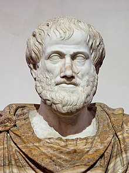

Aristóteles escribió cerca de 200 obras, de las cuales solo se han conservado 31 (ninguna de ellas destinada a la publicación) en el Corpus Aristotelicum sobre una enorme variedad de temas, entre ellos: lógica, metafísica, filosofía de la ciencia, ética, filosofía política, estética, retórica, física, astronomía y biología. Aristóteles transformó muchas, si no todas, las áreas del conocimiento que abordó. Es reconocido como el padre fundador de la lógica y de la biología, pues si bien existen reflexiones y escritos previos sobre ambas materias, es en el trabajo de Aristóteles donde se encuentran las primeras investigaciones sistemáticas al respecto. Aristóteles también ha sido llamado el padre de la ciencia política, zoología, embriología, ley natural, método científico, retórica, psicología, realismo, crítica, individualismo, teleología y de la meteorología.
Algunos descubrimientos científicos medievales fueron criticados simplemente al no encontrarse en Aristóteles, impidiendo la ciencia observacional. No obstante, en el Renacimiento su autoridad se ve opacada por un eclipse histórico momentáneo. Martín Lutero vio a la Iglesia Católica como una Iglesia Aristotélica y se opuso al Estagirita porque se opone a la gracia divina. Los nuevos conceptos científicos lo llevan a un segundo plano. William Harvey y Galileo Galilei reaccionaron contra las teorías de Aristóteles y otros pensadores de la era clásica como Galeno. Pero su influjo, aunque ya no en la física, seguirá vigente en el pensamiento filosófico en sentido estricto en todos los grandes pensadores como Leibniz a pesar de la oposición de Lutero. Empiristas como Thomas Hobbes criticó la teoría de la percepción aristotélica, y David Hume la concepción de causalidad y sustancia. Immanuel Kant también transformó varios conceptos aristotélicos. En Aristóteles, la noción de concepto es un verdadero universal en varias sustancias de las cuales permanecen externas a nosotros, pero que pueden ser captadas. En contraste, un concepto para Kant existe solo en la mente de los individuos. La ética kantiana y utilitarista argumentó que los deberes hacia la humanidad son las normas morales adecuadas para la ética en lugar de la felicidad. No obstante, Benito Jerónimo Feijoo escribió en sus Cartas eruditas y curiosas que entre los filósofos antiguos "ciertamente se puede contar el mayor de todos ellos; esto es, el grande Estagirita".
En el siglo XIX hay un retorno a la metafísica aristotélica, que comenzó con Schelling y continuó con Ravaisson, Trendelenburg y Brentano. Georg Wilhelm Hegel alabó a Aristóteles por haber elaborado y conocido de manera decisiva el concepto de fin ya presente en Sócrates y en Platón. Siguiendo a Wolff y Kant, Hegel extiende el campo de la teleología, que ya no atañe solo a los seres humanos, sino también al sistema. Además, pasa de un proceso universal a los procesos temporales e históricos, un cambio que marca fuertemente las teleologías modernas. Hegel también tiene una concepción del individuo diferente a la de Aristóteles. Según Hegel, los humanos son partes de un todo universal que les da identidad, rol y funciones; Aristóteles, por el contrario, es más individualista y da más énfasis en la centralidad del ser humano. Karl Marx es a veces visto como influido por Aristóteles porque en él se encuentra la idea de la acción libre para realizar el "potencial" de los seres humanos que el capitalismo impide. Marx le llamó "el más grande pensador de la antigüedad" en El Capital. Se dice que Friedrich Nietzsche tomó casi toda su filosofía política de Aristóteles. Por muy inverosímil que sea, es cierto que la separación rígida de la acción de Aristóteles de la producción, y su justificación de la subordinación de los esclavos y otros a la virtud. Actualmente, el esencialismo biológico aristotélico en las especies fijas está fuera de uso, siendo la teoría evolutiva propuesta por Charles Darwin capaz de explicar la variación dentro de una especie sin plantear una esencia en la especie, aunque "filósofos todavía creen que las especies son clases naturales con esencias". No obstante, el "fuertemente esencialista" atribuido a Aristóteles es "demostrablemente un producto de desarrollos históricos posteriores", especialmente "con el surgimiento de la filosofía mecánica y su embriología preformacionista concomitante". El énfasis que Aristóteles pone en el desarrollo ordenado de las partes del embrión es un precursor de los procesos propuestos por dos científicos posteriores: las leyes de embriología propuestas por Karl Ernst von Baer y la teoría de la recapitulación de Ernst Haeckel. En el siglo XX, Heidegger también vuelve a la metafísica Aristóteles, elaborando una nueva interpretación con la intención de justificar su deconstrucción de la tradición escolástica y filosófica. Pensadores políticos como Hannah Arendt y Ayn Rand retomaron su filosofía práctica en sus teorías éticas y políticas. Ayn Rand declaró que consideraba a Aristóteles como el mayor filósofo del mundo y apreciaba en especial su "Órganon" (Lógica).